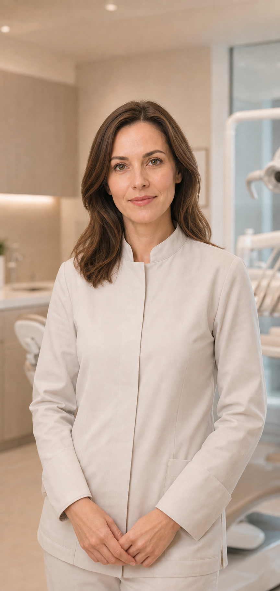
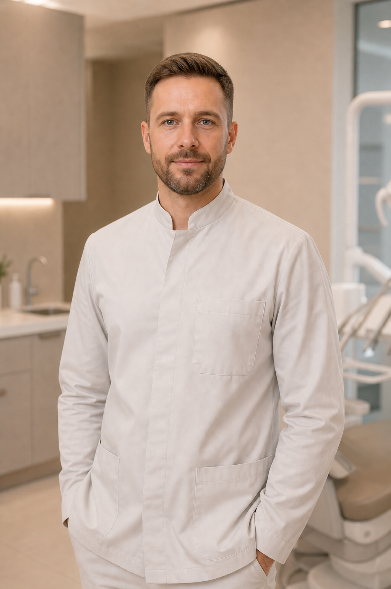
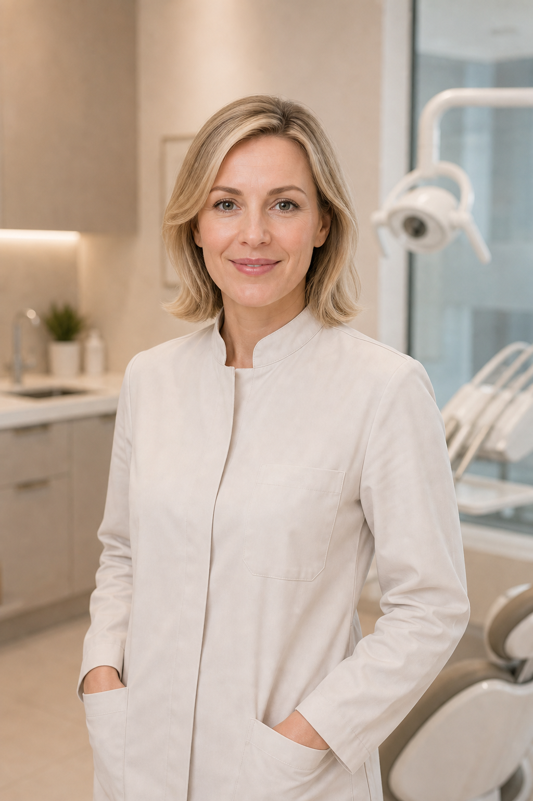

Лечение зубов
Кариес, пульпит, каналы под микроскопом и эстетичные реставрации.
Записаться ↗Премиальная стоматология у Чистых прудов: диагностика, лечение, имплантация и эстетика в одной клинике.
Записаться на прием ↗
Самые частые запросы пациентов: от боли и кариеса до имплантации, прикуса и эстетики улыбки.
Кариес, пульпит, каналы под микроскопом и эстетичные реставрации.
Записаться ↗3D-планирование, установка имплантов и постоянные коронки.
Подробнее ↗Коррекция прикуса с прогнозом движения зубов.
Подробнее ↗Дизайн улыбки, мокап и натуральная керамика.
Подробнее ↗Выберите направление, чтобы записаться к профильному врачу и получить точный план лечения.
Клиника объединяет терапевтов, ортопедов, хирургов, ортодонтов и специалистов эстетической стоматологии. В одном месте можно пройти диагностику, получить понятный план и завершить лечение без лишних переходов между центрами.
Каждый врач ведет пациента по своему направлению и подключает коллег для комплексных случаев.


Хирург-имплантолог. Имплантация, костная пластика, навигационные шаблоны.
Записаться ↗
Реальные истории о диагностике, лечении и общении со специалистами.
 Интервью
ИнтервьюРешил пару вопросов за один визит, сервис на высоте. Удобно, что все находится в одном месте и врач подробно расписал план лечения.
 Эстетическая стоматология
Эстетическая стоматологияОчень приятный персонал. После консультации стало понятно, какие шаги нужны и сколько времени займет лечение.
позитивных изменений пациентов нашей клиники
Клиника расположена по адресу: г. Москва, Чистопрудный бульвар, 12. Рядом метро, удобная транспортная развязка и парковка для пациентов.
 г. Москва
г. Москва